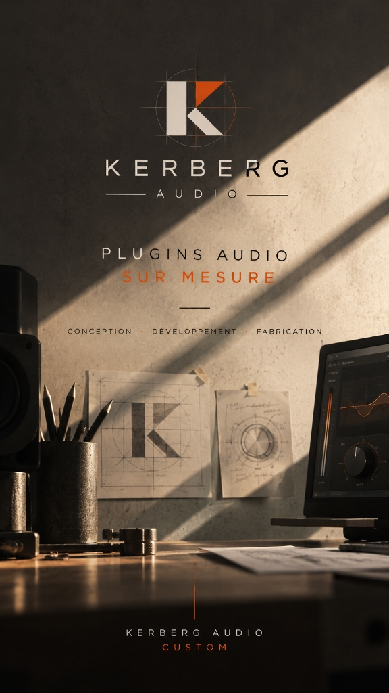
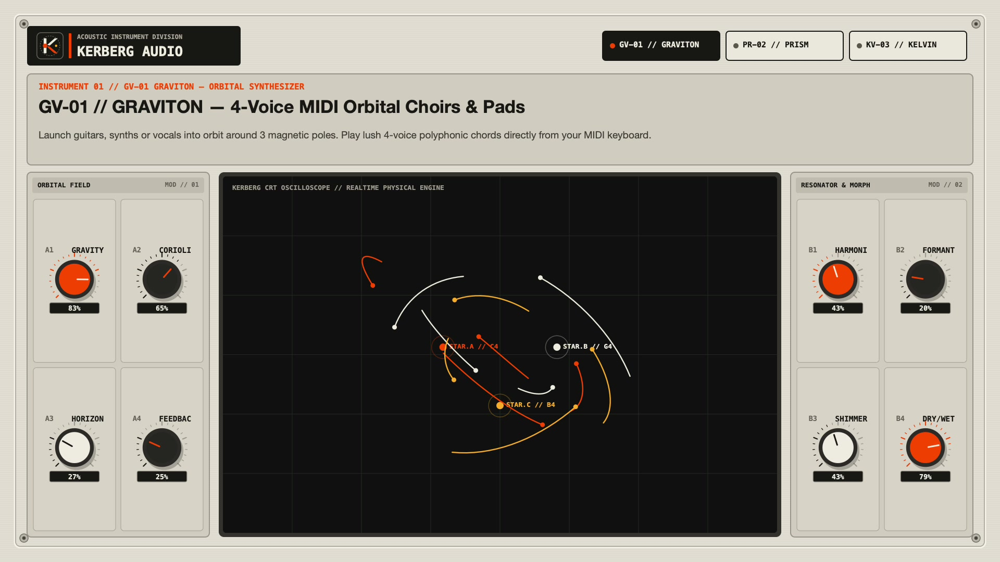
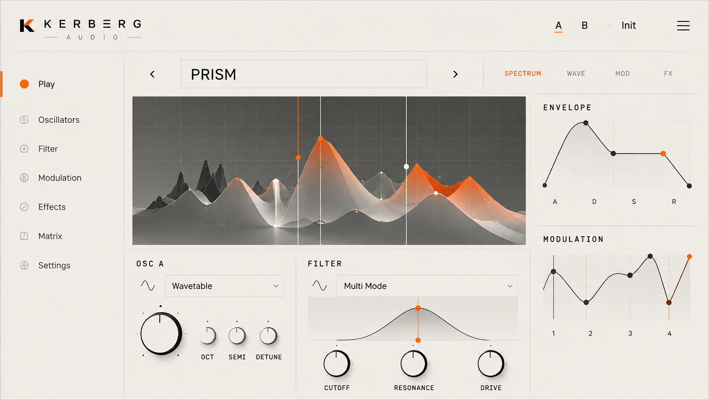
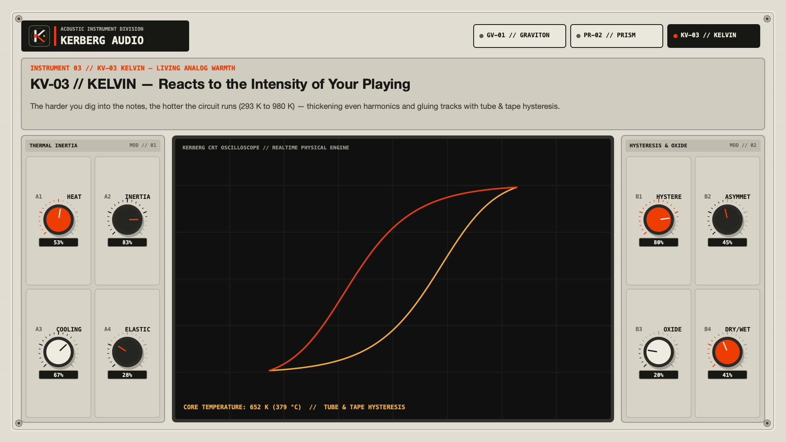

Des plugins audio conçus et développés sur mesure, pour les musiciens et les producteurs.
De la première idée au dernier réglage.

« Le monde est saturé de bruit. Nous croyons en ce qui compte. Chaque contrôle. Chaque courbe. Chaque son. »
Les outils ne doivent jamais s’interposer entre une idée et son timbre. Conçus avec intention, bâtis pour l’exploration sonore.
Une interface tactile et lisible inspirée du design industriel européen. Moins de bruit visuel, plus de présence acoustique.
Algorithmes DSP en Rust 64-bit garantissant une latence zéro, une précision chirurgicale et une stabilité absolue en session.
Visionnez la présentation haute fidélité de notre suite d’instruments audio : architecture gravitationnelle, shaper de transitoires et saturation analogique.
Chaque instrument que nous concevons répond à une exigence musicale précise, incarnée par les principes fonctionnels de notre atelier.

Projetez vos accords au clavier MIDI en orbite autour de 3 pôles d’attraction gravitationnels. Naissance de nappes vivantes, résonateurs harmoniques et textures spatiales à 4 voix.

Séparez l’attaque percussive (Impact), le corps harmonique (Body) et l’air cristallin (Air) puis décalez-les dans le temps (-50 ms à +50 ms) pour faire respirer vos pistes rythmiques.

Un circuit dynamique à mémoire d’hystérésis thermique qui épaissit les harmoniques en fonction de l’intensité du jeu. La rondeur imprévisible des consoles à lampes et bandes magnétiques.
Extrait des notes manuscrites et schémas d’architecture DSP posés sur notre table de travail.
Vous êtes musicien, producteur ou studio d’enregistrement et vous cherchez une chaîne de traitement ou un instrument virtuel unique, introuvable sur le marché ? Nous créons vos plugins sur-mesure en code Rust optimisé.
Décrivez-nous votre vision. Nous vous répondrons sous 24 à 48 heures.